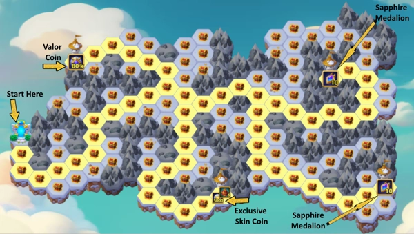
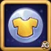
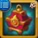
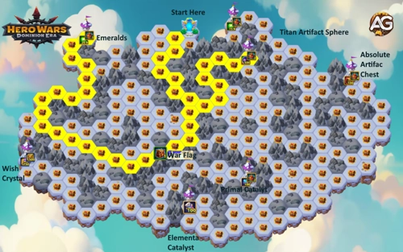

O evento Ilha Misteriosa em Hero Wars: Dominion Era, oferece aos jogadores uma chance empolgante de navegar por um mapa em forma de labirinto cheio de recompensas ocultas, baús de Bandeira de Guerra e recursos poderosos. Seja você um explorador experiente ou esteja enfrentando a ilha pela primeira vez, este guia ajudará você a aproveitar ao máximo sua aventura.
Neste guia atualizado, você descobrirá as melhores rotas para alcançar as torres finais, dicas para maximizar suas recompensas e informações essenciais sobre como coletar toras de madeira para desbloquear pontes. De esmeraldas a baús de artefatos e tesouros sazonais, cada passo conta então planeje seus movimentos com sabedoria!
Ilha Misteriosa Janeiro 2026 - Mapa 2 Evento Fluffy

Ilha Misteriosa Janeiro Mapa 2 Evento Fluffy, 2026, Hero Wars: Dominion Era.
RECOMPENSAS DO MAPA FLUFFY

Moeda de Pele Exclusiva
5000
Moeda de Valor
80 k
Medalhão de Safira
20
Baú Sazonal
51

Baú de Padrões
6
CUSTOS
Movimento do Explorador
55
Ilha Misteriosa Janeiro , 2026 - Mapa 1
A Ilha Misteriosa de Janeiro de 2026 traz novos desafios e recompensas emocionantes para todos os aventureiros! O mapa deste mês apresenta uma rota otimizada que permite que jogadores F2P coletem eficientemente Baús de Bandeira de Guerra, Esmeraldas e Esferas de Artefato de Titã.
Com planejamento estratégico e uso cuidadoso de seus Movimentos do Explorador, você pode navegar pelos caminhos semelhantes a labirintos, desbloquear pontes com toras de madeira e alcançar torres de recompensas valiosas. Seja você buscando a Bandeira de Guerra ou focando em recursos sazonais, este guia ajudará você a aproveitar ao máximo sua jornada pela Ilha Misteriosa em Janeiro!

Ilha Misteriosa Janeiro Mapa 1, 2026, Hero Wars: Dominion Era.
Este Mapa 1 de Janeiro é ideal para jogadores que querem se aventurar mais adiante e coletar itens para o evento de Janeiro Tydus, como Esmeraldas, Esferas de Artefato de Titã.
Principais Recompensas de Janeiro 2026 - Rota Alexandre Games
Recompensas
Custo de Movimentos do Explorador
1 Baú de Bandeira de Guerra
12
20K Esmeraldas
+18
500 Esferas de Artefato de Titã
+8
Total
38
Total de Baús Sazonais com esta Rota
35
Total de Baús de Padrões com esta Rota
5
1. Baú de Bandeira de Guerra
Todo mês, a Alexandre Games revela a melhor rota para jogadores F2P obterem a Bandeira de Guerra mais facilmente, sem desperdiçar Movimentos do Explorador.
Baú de Bandeira de Guerra, Hero Wars Dominion Era.
2. Catalisador Elemental
Catalisador Elemental: Use na Fusão de Espírito Elemental para obter
Habilidades de Afinidade Elemental.
Catalisador Elemental, Hero Wars Dominion Era.
3. Catalisador Primordial
Catalisador Primordial: Usado na Fusão de Espírito Elemental para obter
Habilidades de Afinidade Primordial.
Catalisador Primordial, Hero Wars Dominion Era.
4. Cristal do Desejo
Cristal do Desejo: Transforma-se em 4 Cristais Comuns / 2 Vibrantes /
1 Cristal Radiante, selecionado
aleatoriamente
Cristal do Desejo, Hero Wars Dominion Era.
5. Insígnia do Desejo
Insígnia do Desejo: Transforma-se em 2 Insígnias Comuns / 1 Maior,
selecionada aleatoriamente
Insígnia do Desejo, Hero Wars Dominion Era.
6. Baú de Artefato Absoluto
Baú de Artefato Absoluto: Contém recursos de Artefato Absoluto. Você pode
escolher a recompensa ao abrir o baú.
Baú de Artefato Absoluto, Hero Wars Dominion Era.
7. Baú Sazonal
Muitos recursos para o seu desenvolvimento.
Baú Sazonal, Hero Wars Dominion Era.
8. Baú de Padrões
Contém padrões de bandeira de guerra. Você pode escolher a
recompensa ao abrir o baú
Baú de Padrões, Hero Wars Dominion Era.
9. Esfera de Artefato de Titã
Se você estiver com poucos recursos, vá pelas 500 Esferas de Artefato de Titã. Essas esferas são uma boa opção para iniciantes. Use as esferas no Altar dos Elementos para obter Fragmentos de Artefato de Titã e Fragmentos de Espírito Elemental.
Esfera de Artefato de Titã, Hero Wars Dominion Era.
10. Esmeraldas - A Melhor Recompensa
Após avançar pelas rotas recomendadas, você pode escolher entre gastar alguns Movimentos do Explorador a mais para reivindicar as Esmeraldas. As Esmeraldas continuam sendo o recurso mais valioso de todo o jogo e podem ser usadas em muitos eventos.
Esmeraldas, Hero Wars Dominion Era.
Como Funciona a Ilha Misteriosa?
Ao explorar o mapa da Ilha Misteriosa, você encontrará ícones azuis com ponto de interrogação, cada um marcando um possível passo que seu explorador pode dar. O mapa é estruturado como um labirinto e, a cada movimento, você revelará uma peça oculta. Seu objetivo final é alcançar a torre final localizada na extremidade do mapa.
As pontes na ilha precisam ser ativadas para que você possa avançar, e isso é feito coletando toras de madeira espalhadas pelo caminho. Lembre-se de que todos os jogadores enfrentam o mesmo layout e posicionamento de recompensas durante o evento.
Recompensas de Alto Nível Disponíveis na Ilha Misteriosa
Ganhe até 15.000 Esmeraldas junto com dois Baús de Padrão exclusivos
Colete 110 Baús de Pedras de Aparência, cada um acompanhado de 2 Baús de Padrão
Reúna 75.000 Pedras de Aparência de Titã mais 3 Baús de Padrão bônus
Receba 500 Esferas de Artefato de Titã acompanhadas de 2 Baús de Padrão
Desbloqueie 100 Baús de Artefato Absoluto com 2 Baús de Padrão incluídos
Recompensas Secundárias e Bônus
Baú de Bandeira de Guerra
Presente Roxo de Dominion
Baús de Padrão adicionais
Baús de Tesouro Sazonal com conteúdos aleatórios
Caminhos Ideais para Grandes Recompensas
A cada temporada, as rotas mais curtas e eficientes até as maiores recompensas são descobertas e mapeadas. Na versão de julho da Ilha Misteriosa, caminhos específicos exigem menos movimentos para alcançar as torres de grandes prêmios. No entanto, recompensas valiosas também podem estar um pouco fora das trilhas principais, então considere desvios estratégicos quando necessário.
A energia do explorador é consumida a cada movimento. Se sua energia acabar e não for reabastecida, a recuperação automática é interrompida. É recomendável planejar sua exploração para momentos em que você esteja ativamente participando do evento.
Mecânica dos Baús de Tesouro Sazonais
Ao longo do mapa, você encontrará baús de tesouro sazonais que contêm recompensas aleatórias. Essas recompensas são determinadas no momento em que o baú é aberto. A mecânica por trás da geração desses baús ainda não é totalmente clara, mas eles oferecem materiais e moedas valiosas.
Tudo Sobre os Baús de Bandeira de Guerra
As Bandeiras de Guerra são itens poderosos na Dominion Era, e você pode obtê-las em baús especiais chamados Baús de Bandeira de Guerra. Existem quatro versões diferentes desses baús, e as bandeiras disponíveis variam conforme a temporada do evento.
Baú de Bandeira de Guerra – Versão 1
Concede a escolha entre as seguintes bandeiras: Declínio, Força dos Mascotes, Fervor ou o Fio Dourado.
Tabela: Baú de Bandeira de Guerra – Versão 1
Recompensa
Imagem
Bandeira de Guerra do Declínio
Bandeira de Guerra da Força dos Mascotes
Bandeira de Guerra do Fervor
500 Fios Dourados
Baú de Bandeira de Guerra – Versão 2
Contém bandeiras da seleção da temporada anterior, permitindo que você recupere o progresso ou reforce estratégias com bandeiras mais antigas.
Tabela: Baú de Bandeira de Guerra – Versão 2
Recompensa
Imagem
Bandeira de Guerra do Fervor
500 Fios Dourados
Baú de Bandeira de Guerra – Versão 3
Oferece uma seleção que inclui: Declínio, Força dos Mascotes, Gelo, Guerreiros Ágeis e o Fio Dourado.
Tabela: Baú de Bandeira de Guerra – Versão 3
Bandeira de Guerra
Imagem
Bandeira de Guerra dos Guerreiros Ágeis
Bandeira de Guerra do Declínio
Bandeira de Guerra da Força dos Mascotes
Bandeira de Guerra do Fervor
Bandeira de Guerra do Gelo
500 Fios Dourados
Baú de Bandeira de Guerra – Versão 4
Fornece acesso a um conjunto de seis bandeiras de guerra no total, oferecendo mais flexibilidade na sua coleção de estandartes.
Tabela: Baú de Bandeira de Guerra – Versão 4
Bandeira de Guerra
Imagem
Bandeira de Guerra dos Guerreiros Ágeis
Bandeira de Guerra do Declínio
Bandeira de Guerra da Força dos Mascotes
Bandeira de Guerra do Fervor
Bandeira de Guerra do Gelo
Bandeira de Guerra da Recuperação
500 Fios Dourados
Como Obter Bandeiras de Guerra em Hero Wars: Dominion Era
Todo mês, o evento Ilha Misteriosa oferece uma oportunidade para ganhar Bandeiras de Guerra. Visite o blog Alexandre Games para conferir guias atualizados com as melhores rotas e estratégias eficientes para cada temporada. Como existem quatro tipos de bandeiras e sua disponibilidade muda a cada edição, manter-se informado é essencial para maximizar suas recompensas.
Jogadores Free-to-Play Podem Obter Bandeiras de Guerra?
Com certeza! Mesmo como jogador free-to-play, é possível conseguir ao menos uma Bandeira de Guerra durante cada evento da Ilha Misteriosa. O segredo está em seguir um caminho eficiente e administrar bem os movimentos do explorador. Todo mês, o blog Alexandre Games compartilha guias atualizados com as melhores rotas voltadas para F2P, garantindo o mínimo de recompensas sem gastar nada!
Os Movimentos do Explorador Expiram Após o Fim de uma Aventura Sazonal?
Pode ficar tranquilo! Se você ainda tiver Movimentos do Explorador não utilizados quando a Aventura Sazonal atual terminar, você não os perderá. Esses movimentos restantes serão transferidos e estarão disponíveis para uso na próxima Aventura Sazonal. É uma ótima forma de se manter à frente nos desafios futuros!
Conclusão
O evento Ilha Misteriosa é muito mais do que um simples mapa de exploração. Com planejamento estratégico, movimentos eficientes e atenção às recompensas ocultas, você pode conquistar alguns dos recursos mais valiosos de Hero Wars: Dominion Era. Não se esqueça de acompanhar fontes confiáveis como o blog Alexandre Games para obter tutoriais atualizados e guias com os caminhos ideais a cada mês!
Você gostou do nosso Guia da Ilha Misteriosa para Hero Wars Web e Facebook? Há algo que não entendeu ou gostaria de sugerir mudanças? Convidamos você a se juntar à nossa sessão de comentários na página do Alexandre Games Blog. Não hesite em expressar sua opinião, clarificar suas dúvidas e compartilhar sua sugestões. Clique no botão abaixo para começar:


 Os Movimentos do Explorador Expiram Após o Fim de uma Aventura Sazonal?
Os Movimentos do Explorador Expiram Após o Fim de uma Aventura Sazonal?

 Guia Completo dos Mapas de Aventura dos Mascotes em Hero Wars: Dominion Era
Guia Completo dos Mapas de Aventura dos Mascotes em Hero Wars: Dominion Era
 Como Ativar Recompensas de Códigos Promocionais em Hero Wars: Dominion Era 2025
Como Ativar Recompensas de Códigos Promocionais em Hero Wars: Dominion Era 2025
 Hero Wars Dominion Era: Guias de Personagem - Domine com Cada Herói
Hero Wars Dominion Era: Guias de Personagem - Domine com Cada Herói
 Guia Completo de Mascotes para Hero Wars: Dominion Era
Guia Completo de Mascotes para Hero Wars: Dominion Era
 Hero Wars: Dominion Era Tier List 2025 - Melhores Heróis Ranqueados
Hero Wars: Dominion Era Tier List 2025 - Melhores Heróis Ranqueados